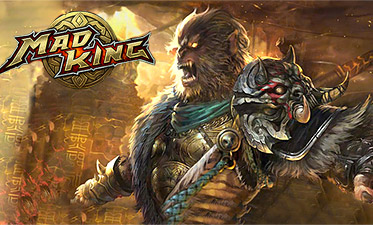

|  |
Mad King
Mad King – браузерная ролевая MMO, кардинально отличающаяся от своих собратьев. Тебя ждет современная графика, необыкновенные персонажи, запоминающиеся данжи и эпические сражения. Ты готов погрузиться в кровопролитные баталии и доказать свое превосходство перед другими геймерами? Тогда регистрируйся и в бой. Благодаря интересному обучению, даже новичку не составит труда освоить геймплей.
Классы
В игре тебя ждет три уникальных класса. Ты можешь перевоплотиться в:
1) Карателя – беспощадный воин, сражающийся на передовой;
2) Сирена – симпатичная блондинка, специализирующаяся на заклинаниях;
3) Страж – пуленепробиваемый танк, способный сдержать натиск врагов.
Скриншоты к игре Mad King
|
|